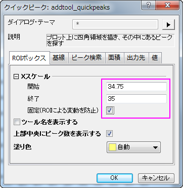
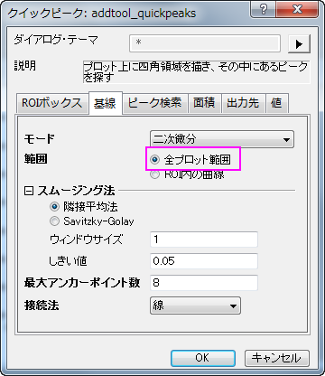
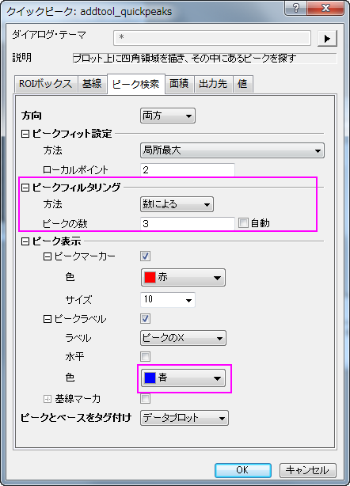
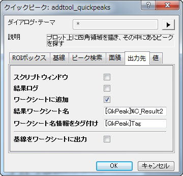
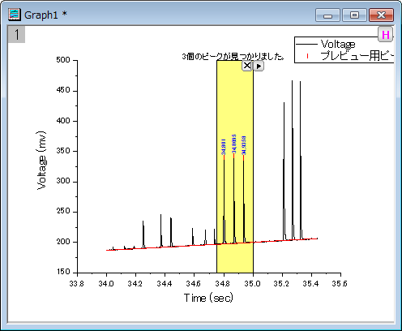
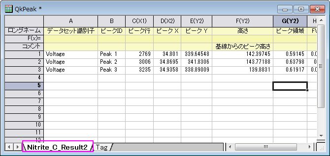
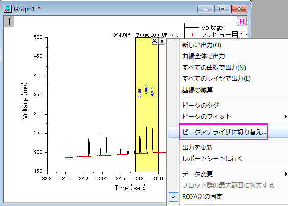
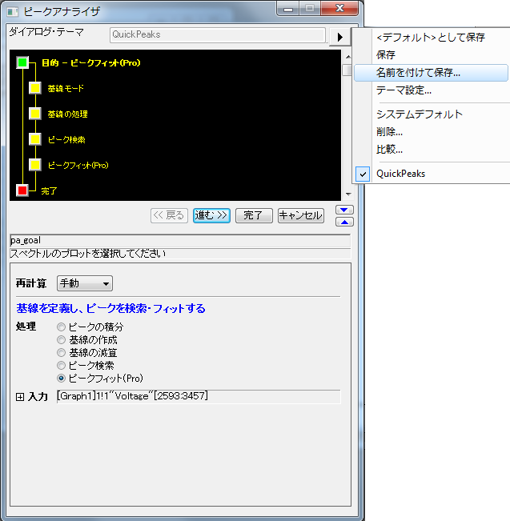

クイックピークガジェットとピークアナライザを組み合わせて使用
サマリー
クイックピークガジェットはピーク解析を直感的に行う事ができ、ピークアナライザはピーク検索やピークフィットの詳細設定が可能です。例えば、最初にクイックピークガジェットでピークを探し、それからピークアナライザでピークの解析を行う事ができます。設定全体をピークアナライザでテーマとして保存すれば、後にバッチ処理に活用できます。
必要なOriginのバージョン: OriginPro 9.0 SR0以降
学習する項目
このチュートリアルでは、以下の項目について解説します。
- クイックピークガジェットを使ってピークを検索する
- クイックピークガジェットからピークアナライザを開く
- クイックピークガジェットで見つけたピークをピークアナライザで詳しく分析する
ステップ
このチュートリアルは、チュートリアルデータプロジェクト（<Origin EXE フォルダ>\Samples\TutorialData.opj）と関連しています。
- TutorialData.opj を開き、プロジェクトエクスプローラでQuick Peaks Gadget フォルダを開きます。
- Nitrate ワークシート内にある全ての列を選択し、2Dグラフギャラリーツールバーの
 ボタンをクリックして折れ線グラフを作成します。
ボタンをクリックして折れ線グラフを作成します。
- 作成されたグラフウィンドウをアクティブにし、ガジェット:クイックピークと選択します。
- ROIボックスタブで、Xスケールの開始と終了の値をそれぞれ34.75と35に設定し、固定(ROIによる変動を防止)にチェックを付けます。
- 
- 基線タブを開いて、範囲から全プロット範囲のラジオボタンを選択します。
- 
- ピーク検索タブでは、ピークフィルタリングの方法で数によるを選択し、ピークの数を3に設定します。ピークラベルの色を青に設定します。
- 
- 出力先タブでは結果ワークシート名を[QkPeak]%C_Result2に変更します。
- 
- 値タブでは出力する値を指定できます。ピークID、ピークX、ピークY、高さ、ピーク領域、FWHMのチェックのみを残して他のチェックは外します。OKをクリックすると、ガジェットがプロットに追加されます。
- 
- ROIボックスの右上にある矢印ボタンをクリックして新しい出力を選び、レポートシートを生成します。
- もう一度同じ方法でコンテキストメニューを開き、今度はレポートシートに行くを選択してレポートシートを開きます。
- 
- では、ピークアナライザを開いてピークフィットを続けて行きましょう。コンテキストメニューを開き、ピークアナライザに切り替えを選びます。
- 
- ピークアナライザが開くと、ピークフィットのゴールは既に選択されており、基線モードとピーク検索の方法はクイックピークガジェットの設定を引き継いでいる事がわかります。
- ピークのフィットページに直接行き、フィット実行ボタンをクリックして、先程見つけた3つのピークをガウス関数でフィットします。
 ボタンをクリックして、コンテキストメニューから名前を付けて保存を選択し、テーマ名をMyQuickPeaksとして保存します。
ボタンをクリックして、コンテキストメニューから名前を付けて保存を選択し、テーマ名をMyQuickPeaksとして保存します。
- 
- ピークアナライザでは完了ボタンをクリックしてピークフィット結果を生成します。
| Notes: 保存したテーマはバッチ処理でピーク解析を行う時に使用できます。解析：ピークと基線：テーマを使ったピーク分析のバッチ処理を選び、paMultiYダイアログを開きます。バッチ処理によるピーク解析は、複数の似たようなデータファイルがあるときなどに便利です。詳細は、このサンプルをご覧ください。 |